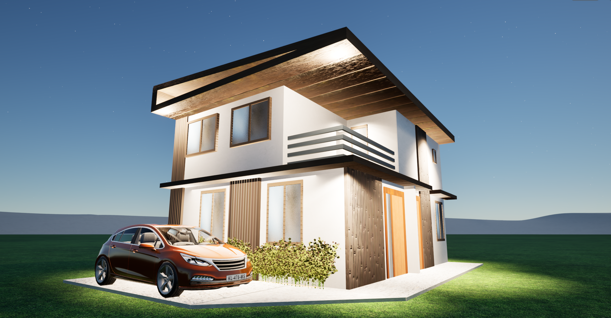
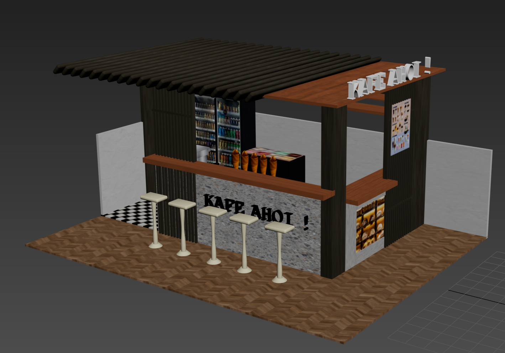

Project Gallery

archicad rendering

simple living room

2 storey residential

coffee shop
Business Management 1 • Architecture Practice & Insights
This semester in Business Management 1 has broadened my understanding of the architectural profession. Beyond designing spaces, I have learned how architecture intersects with economics, clients, legalities, and real-world project management. These lessons helped me see architecture not only as an art, but also as a business built on trust, strategy, and responsibility.
archicad rendering
simple living room
2 storey residential
coffee shop
Business Management 1 helped me realize that being an architect in the Philippines is not just about designing spaces; it is also about understanding how to run a sustainable practice in a competitive industry. Learning about project budgeting, client relations, contracts, and professional responsibilities made me see architecture as both a creative field and a business that requires strategy and discipline. It taught me that successful architects must balance artistry with financial awareness, manage resources wisely, and build trustworthy relationships with clients and collaborators. Most importantly, the course reminded me that good business management leads to better built environments, because when a firm is stable, it can focus on delivering ethical, high-quality, and socially responsible designs that truly serve Filipino communities.
Email: christian00019@gmail.com
BS Architecture — MAPUA UNIVERSITY (2022103010)